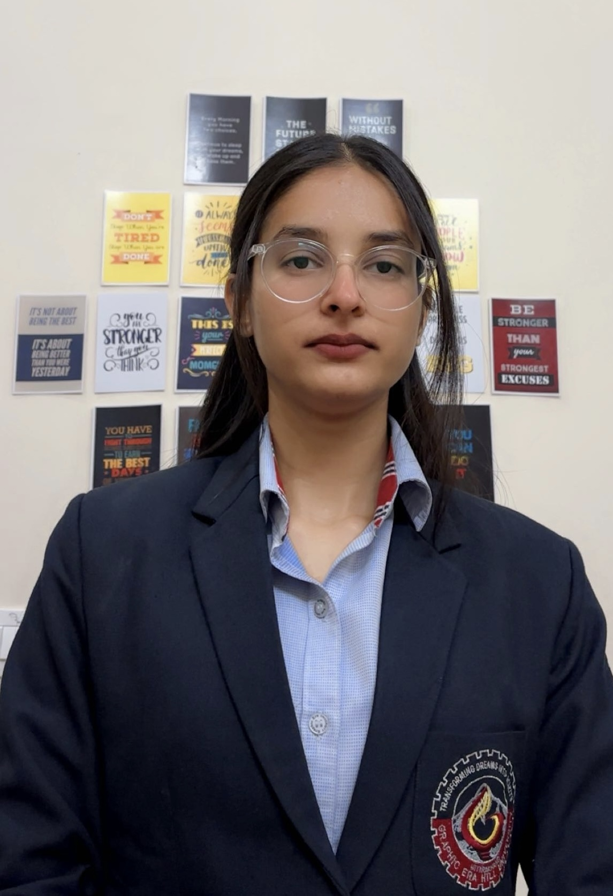

Web Developer
Welcome to my e-portfolio! My name is Akanksha Malik, and I am a Student passionate about creating innovative designs, solving complex problems, lifelong learning. This portfolio showcases my skills, experiences, and projects, reflecting my Learnings in PESE. Explore my work to see how I blend creativity, expertise, and a commitment to growth in everything I do.
Akanksha, a software engineer proficient in multiple programming languages, with strong teamwork and management skills. I thrive in problem-solving, innovation,delivering efficient software solutions.
Welcome to My E-Portfolio Guided by the Five Ring Framework, my personal theory, this portfolio reflects my journey through five interconnected elements: Identity, Environment, Learning, Relationships, and Purpose. Each ring seamlessly connects to the next, forming a continuous cycle of growth and impact. Through this lens, I present my experiences and aspirations—showcasing how these five elements shape who I am and where I'm headed. Identity – The Core of My Journey "I’m Akanksha Malik, a student fueled by passion and purpose." Identity is the foundation of my Five Ring cycle. My name represents where my journey begins and where it always returns. Place–"Based in Meerut, a city known for its rich history and resilience." Environment plays a vital role in shaping my outlook. My surroundings provide the context that anchors my growth within the Five Ring flow. Education– "Educated at Graphic Era Hill University, where I honed critical thinking and creativity." Learning is the third ring, fueling my skills and connecting my roots to my ambitions. It bridges my past experiences with my future aspirations. Relationships – "Guided and supported by my parents and siblings, who keep me grounded and push me forward." Relationships form the fourth ring, linking my past and present. My family’s unwavering support fuels my drive and resilience. Purpose – Creating Impact "I aim to innovate, inspire, and transform my passions into meaningful impact." Purpose is the final ring, completing the Five Ring cycle by directing my efforts toward a future I envision—one where I make a difference. Akanksha, a software engineer proficient in multiple programming languages, with strong teamwork and management skills. I thrive in problem-solving, innovation,delivering efficient software solutions.”
Welcome to my e-portfolio, guided by Sixer Theory—a personal framework where six interconnected nodes shape my journey: identity, context, knowledge, connections, action, and vision. Each node links to the next, forming a dynamic cycle of discovery and impact. Through this lens, I present my experiences and aspirations, showcasing how these six elements define who I am, how I grow, and where I’m headed. NAME: "I’m Akanksha Malik, a student driven by curiosity and connection." Explanation: "In Sixer Theory, identity is the first node—my name reflects the starting point of a six-step journey toward impact, where every action builds on who I am." PLACE: "Based in Meerut, Hailing from Meerut, I draw inspiration from its rich history, vibrant culture, and dynamic spirit.." Explanation: "Place is the second node in Sixer Theory, grounding my work in a context that shapes my perspective and fuels the next steps of creativity." EDUCATION: "Currently pursuing my BTech in Computer Science at Graphic Era Hill University, I have developed strong analytical, technical, and management skills." Explanation: "Education forms the third node of Sixer Theory, equipping me with the tools and knowledge to connect ideas across six stages of growth." RECENTLY: "Recently, I’ve been exploring Sixer Theory, linking ideas through six key steps." Explanation: "This fourth node is about reflection—Sixer Theory helps me analyze recent efforts, tracing how six inf3luences turn experiments into insights." CAREER OBJECTIVE: "My goal is to create impactful solutions, using Sixer Theory to connect and innovate." Explanation: "Aspiration is the fifth node; Sixer Theory guides my career by mapping six critical links between where I am and the change I want to make." HOBBY: "In my downtime, I workout, code, refining skills that shape my six-step approach Explanation: "Hobbies are the sixth node in Sixer Theory, completing the cycle by sharpening abilities that feed back into my broader goals."
I'll go with The Shawshank Redemption! It's a timeless classic with deep themes of hope, resilience, and friendship.
1) Favorite Dialogue and Why?
"Hope is a good thing, maybe the best of things, and no good thing ever dies." – Andy Dufresne
This line perfectly captures the essence of the movie. Despite years of wrongful imprisonment, Andy never loses hope. It’s a powerful reminder that no matter how tough life gets, hope can keep us moving forward.
2) Personal Review-
This film is one of the greatest of all time. The storytelling, the acting (especially Morgan Freeman as Red), and the way the plot unfolds make it truly compelling. It’s a slow burn but leaves a lasting impact. The bond between Andy and Red is heartwarming, and the ending is deeply satisfying. I’d give it a solid 10/10.
3) Learning to Take Away from the Movie
• Patience and resilience can get you through the darkest times.
• True friendships can form even in the harshest circumstances.
• Justice doesn’t always come immediately, but perseverance can lead to eventual victory.
• The importance of hope—as Red realizes at the end, life without hope is no life at all.
4) Related Concepts Learned in the Classroom
• Psychology & Human Behavior: The film explores institutionalization (like Brooks' struggle to adapt after release) and how humans react to long-term confinement.
• Law & Ethics: It brings up themes of corruption within the justice system and the ethical dilemmas surrounding crime and punishment.
• Project Management & Planning: Andy’s long-term escape plan showcases patience, meticulous planning, and problem-solving skills—something applicable even in software engineering!
Sharing insights and lessons learned from the 1 vs 64 activity.
Resume Welcome to my guide on resume writing—a craft that blends clarity, strategy, and personal storytelling. A resume is more than a document; it’s a snapshot of your journey, designed to connect your skills and experiences to opportunity. In this section, I break down the essentials of creating an impactful resume, from highlighting strengths to tailoring details, all to help you stand out and move forward. In refining my resume-writing skills, I’ve learned to: tailor content to job-specific needs, quantify achievements like 'Cut processing time by 25%,' and optimize for ATS with strategic keywords—all while maintaining a clean, professional format
Click the button below to download my resume:
Email: malikakanksha27@gmail.com
Phone: +91 8924051060
Location: UTTRAKHAND,INDIA